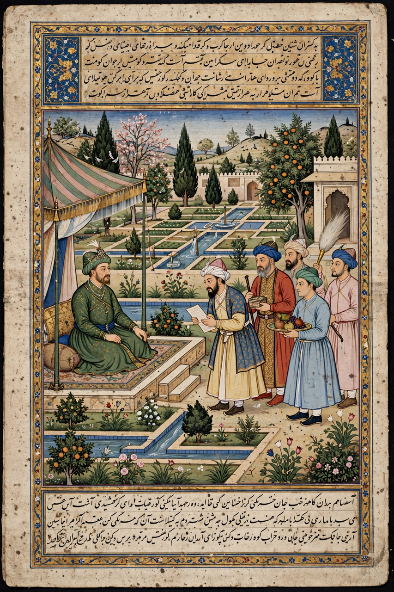

| Baburnama | |
|---|---|
| Author | Babur (Zahir-ud-din Muhammad Babur) |
| Language | Chagatai Turkic |
| Genre | Autobiography / memoir |
| Written | c. 1494–1529 (entries, with later revisions) |
| Translations | Persian (1589, trans. Abdul Rahim Khan-i-Khanan); English (Leyden & Erskine 1826; Beveridge 1912–1922; Thackston) |
| Subjects | Ferghana, Kabul, conquest of India, natural history, court life |

The Baburnama (Chagatai: Bāburnāma; literally "Book of Babur") is the memoir of Zahir-ud-din Muhammad Babur, founder of the Mughal Empire. Written in Chagatai Turkic, Babur's mother tongue, it is regarded as one of the first true autobiographies in Islamic literature and a masterpiece of Turki prose — candid, observant and wide-ranging. It covers Babur's life from his accession as a boy ruler of Ferghana in 1494 through his loss of Samarkand, his seizure of Kabul, and his conquest of northern India culminating in the First Battle of Panipat (1526).
The surviving text falls into three parts, corresponding to Ferghana (1494–1504), Kabul (1504–1525) and Hindustan (1525–1529), with notable gaps (notably 1508–1519) where entries were lost or never written. Babur describes battles and politics in unflinching detail — including his own failures, drunkenness and grief — alongside keen observations of geography, climate, flora, fauna and revenue systems; his accounts of Indian animals, fruits and seasons in the Hindustan section are among the earliest systematic descriptions by a Central Asian author. He also records poetry, wine parties, gardens he laid out, and sharp portraits of contemporaries such as Shaybani Khan and Ibrahim Lodi.
No autograph copy survives. The memoir was translated into Persian at the court of Akbar in 1589 by Abdul Rahim Khan-i-Khanan, and several lavishly illustrated Persian copies were produced in the 1590s with hundreds of miniatures by the imperial atelier — among the glories of Mughal painting, now dispersed among museums in London, Moscow, Baltimore and elsewhere. A Chagatai text was also preserved, including the Hyderabad codex that underlay Annette Beveridge's English translation (1912–1922); the earlier 1826 English version by John Leyden and William Erskine was based chiefly on the Persian.
The Baburnama's frank first-person voice — Babur discusses his youthful infatuation with a boy in the camp bazaar, his terror in battle, his tears at melons from home — sets it apart from the panegyric chronicles typical of the era and has drawn comparisons with the Confessions of Augustine and Rousseau. It is a foundational text of Chagatai literature, a key primary source for the history of Central Asia and early Mughal India, and the model for later Mughal autobiographies such as Jahangir's Tuzuk.